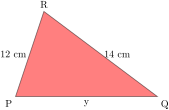
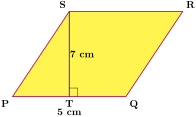
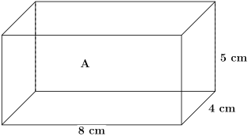

Similarity and enlargement are key concepts in geometry that deal with proportional transformations of shapes.
Subsection2.1.1Similarity
Similarity refers to a relationship between two shapes or figures where one can be transformed into the other through scaling (enlargement or reduction), without changing its shape. The two shapes are similar if they have the same shape but may differ in size.
Activity2.1.1.
Work in groups
(a)
Draw triangle \(ABC\) with the following side lengths as shown in the figure below:
What do you notice about the ratios of corresponding sides above?
(g)
What do you observe between \(\angle ABC \) and \(\angle PQR \text{,}\)\(\angle BCA \) and \(\angle QRP \) ,\(\angle BAC \) and \(\angle QPR \)
(h)
What do you observe about the two triangles based on their corresponding sides and angles?
(i)
What is the relationship between triangle \(ABC\) and triangle \(PQR\text{?}\)
(j)
Discuss your findings and share your conclusions with the class.
Example2.1.1.
In the figure below, the triangles \(PQR\) and \(ABC\) are similar. Calculate the lengths marked with letters \(x\) and \(y\text{.}\)

Solution.
\(AB\) corresponds to \(PQ\text{,}\)\(BC\) corresponds to \(QR\text{,}\) and \(AC\) corresponds to \(PR\text{.}\)
\begin{align*}
\text{Therefore,} \amp \frac{AB}{PQ}= \frac{AC}{PR}= \frac {BC}{QR} \\
=\amp \frac{6\, cm}{y}= \frac{9\, cm}{12\, cm}= \frac {x}{14\, cm} \\
\frac{6\, cm}{y}=\amp \frac{9\, cm}{12\, cm}\\
y \times 9\, cm= \amp 6\, cm \times 12\, cm \\
y= \amp \frac{72\, cm^2}{9\, cm} \\
y =\amp 8\, cm \\
\text{Therefore PQ}= \amp 8 cm\\
\frac{9\, cm}{12\, cm}=\amp \frac{x}{14\, cm}\\
x \times 12\, cm= \amp 9\, cm \times 14\, cm \\
x= \amp \frac{126\, cm^2}{12\, cm} \\
x =\amp 10.5\, cm \\
\text{Therefore BC}= \amp 10.5\, cm
\end{align*}
Example2.1.2.
Given that triangles \(XYZ\) and \(PQR\) in figure 2.1.3 are similar, Find the size of \(\angle\, QPR\text{,}\)\(\angle\, PQR\) and the length of line \(PR\)
Figure2.1.3.
Solution.
Since the two triangles are equal, then their corresponding angles must be equal
\(\angle\, ZYX\) corresponds to \(\angle\, QPR\)
Since \(\angle\, ZYX=72^\circ\text{,}\) then
\(\angle\, QPR= 72^\circ \)
\(\angle\, YZX\) corresponds to \(\angle\, PQR\)
Since \(\angle\, YZX=61^\circ\text{,}\) then
\(\angle\, PQR= 61^\circ \)
Now to find the length of \(PQ\text{,}\) We use the concept of similarity
Triangle \(ABE\) is similar to triangle \(ACD\text{,}\) as shown in the figure below, Given that \(DC=24\, cm\) , \(AE=6\, cm\)\(ED=12\, cm\text{,}\) determine the length of \(BE\text{.}\)
Figure2.1.5.
Solution.
We first identify the corresponding sides,
Side \(AD\) corresponds with side \(AE\)
Side \(CD\) corresponds with side \(BE\)
Side \(AC\) corresponds with side \(AB\)
\begin{align*}
\text{By the concept of similarity,} \amp \\
\frac{DC}{BE} =\frac{AD}{AE}=\frac{AC}{AB}\amp \\
\text{Given that AE=6 cm, ED=12 cm and DC=24 cm} \amp \\
\text{Therefore,}\frac{DC}{BE} =\amp \frac{AD}{AE}\\
\frac{24}{BE}=\amp \frac{18}{6}\\
BE= \amp \frac{(24 \times 6)}{18}\\
= \amp 8\, cm
\end{align*}
ExercisesExercises
1.
In the triangles below, Determine which triangles are similar by comparing their corresponding sides:
2.
Given that triangle \(ABC\) is similar to triangle \(DEF\text{,}\) as shown in the diagram below,
Figure2.1.6.
(a). Determine the measure of angle \(\theta\)
(b). Calculate the value of \(x\)
3.
Find the value of x.
Figure2.1.7.
4.
Given that \(AB\) is parallel to \(CD\) in the figure below, determine the measurements of line \(CD\) and \(AE\text{.}\)
Figure2.1.8.
Subsection2.1.2Enlargement
Activity2.1.2.
Work in groups
(a)
Draw and label the \(x\) axis and \(y\) axis on the graph paper.
(b)
Mark the origin at \((0,0)\) and label it as \(\textbf{O}\text{.}\)
(c)
Plot the points \(A(2,3)\text{,}\)\(B(1,1)\text{,}\) and \(C(4,1)\text{.}\)
(d)
Connect points \(A\text{,}\)\(B\text{,}\) and \(C\) with straight lines to form triangle \(ABC\text{.}\)
(e)
Draw straight lines from O to \(A\text{,}\)\(O\) to \(B\text{,}\) and \(O\) to \(C\text{.}\)
(f)
Measure and record the lengths of \(OA\text{,}\)\(OB\text{,}\) and \(OC\text{.}\)
(g)
Extend each line to twice its original length and mark the new points as \(A'\text{,}\)\(B'\text{,}\) and \(C'\text{.}\)
(h)
Connect \(A'\text{,}\)\(B'\text{,}\) and \(C'\) to form the enlarged triangle \(A'B'C'\text{.}\)
(i)
Compare the two triangles and note any similarities.
(j)
Calculate the ratios \(\frac{OA'}{OA}\text{,}\)\(\frac{OB'}{OB}\text{,}\) and \(\frac{OC'}{OC}\text{,}\) what do you notice between the three ratios.
(k)
Discuss your findings with the rest of the class.
Enlargement is a transformation that increases the size of a shape. The shape is enlarged by a scale factor. The scale factor is used to multiply the length of each side of the shape to get the length of the corresponding side of the enlarged shape.
In the figure below, \(ABC\) is a triangle in which \(AB=2.2\)\(cm\text{,}\)\(BC=1.8\)\(cm\) and \(AC=4.5\)\(cm\text{.}\)\(O\) is a point such that \(OA=4.5\)\(cm\text{,}\)\(OB=3\)\(cm\) and \(OC=4\)\(cm\text{.}\)
Figure2.1.9.
Triangle \(A'B'C'\) has been obtained from triangle \(ABC\) as follows:
\(OA\text{,}\)\(OB\) and \(OC\) are produced such that \(OA'=13.5\)\(cm\text{,}\)\(OB'=9\)\(cm\) and \(OC'=12\)\(cm\text{.}\)
The process of obtaining triangle \(A'B'C'\) from triangle \(ABC\) is known as \(\textbf{enlargement.}\)
Triangle \(ABC\) is said to be object and triangle \(A'B'C'\text{,}\) its image under enlargement.The point \(O\) is known as the \(\textbf{centre of enlargement.}\)
\(\textbf{Point to note.}\)
To determine the scale factor, divide the length of the enlarged image by the corresponding length of the original object.
The scale factor of this enlargement is \(3\text{.}\) In an enlargement, the object and its image remain similar. The linear scale factor of the enlargement determines the proportional transformation.
Lines connecting object points to their corresponding image points intersect at the center of enlargement. This property helps in determining the center of enlargement when both the object and its image are given.
Example2.1.10.
In the figure below, Triangle \(P'Q'R'\) is the enlarged image of triangle \(PQR\text{,}\) with center \(O\)
(a) Given that \(OP=6\)\(cm\) and \(PP'=9\)\(cm\text{,}\) determine the scale factor of the enlargement.
(b) If \(QR=4\)\(cm\text{,}\) find the length of \(Q'R'\)
Construct any triangle \(XYZ\) and choose a point \(O\) outside the triangle. Using \(O\) as the center of enlargement and a scale factor of \(4\text{,}\) construct the enlarged image of triangle \(XYZ\) under the enlargement.
Solution.
Figure2.1.13.
By measurement;
\(OX=1.8\)\(cm\text{,}\)\(OY=3.2\)\(cm\) and \(OZ=2.7\)\(cm\text{.}\)
\begin{align*}
\text{To determine X', the image of X, We follow these steps:} \amp \\
OX= \amp 1.8\, cm\\
\frac {OX'}{OX}= \amp \text{scale factor}\\
\frac{OX'}{1.8} =4\amp \\
OX'= \amp 4 \times 1.8\, cm\\
= \amp 7.2\, cm
\end{align*}
Extend \(OX\) and measure \(7.2\)\(cm\) from \(O\) to get \(X'\text{.}\)
\begin{align*}
\text{To determine Y', the image of Y, We follow these steps:} \amp \\
OY= \amp 3.2\, cm\\
\frac {OY'}{OY}= \amp \text{scale factor}\\
\frac{OY'}{3.2} =4\amp \\
OX'= \amp 4 \times 3.2\, cm\\
= \amp 12.8\, cm
\end{align*}
Extend \(OY\) and measure \(12.8\)\(cm\) from \(O\) to get \(Y'\text{.}\)
\begin{align*}
\text{To determine Z', the image of Z, We follow these steps:} \amp \\
OZ= \amp 2.7\, cm\\
\frac {OZ'}{OZ}= \amp \text{scale factor}\\
\frac{OZ'}{2.7} =4\amp \\
OX'= \amp 4 \times 2.7\, cm\\
= \amp 10.8\, cm
\end{align*}
Extend \(OZ\) and measure \(10.8\)\(cm\) from \(O\) to get \(Z'\text{.}\)
Example2.1.14.
Triangle \(A'B'C'\) is the image of triangle \(ABC\) under an enlargement.Locate the centre of the enlargement.
Solution.
To locate the centre of enlargement we follow the following steps:
Draw lines connecting point \(A\) to \(A'\text{,}\)\(B\) to \(B'\) and \(C\) to \(C'\) and extend those lines. The intersection point of those lines, will be the center of enlargement.
Example2.1.15.
Given that \(A\, (6,8)\text{,}\)\(B\, (8,8)\text{,}\)\(C\, (12,8)\text{,}\)\(D\, (14,2)\) and \(E\, (10,0)\) are the verticies of the pentagon, find the verticies of its image after an enlargement with origin as the centre and scale factor of:
(a) \(2\)
(b) \(\frac{1}{2}\)
(c) \(-1\)
Solution.
Given the centre of enlargement is \((0,0)\) and the scale factor \(k\text{,}\)We find the coordinates of the image as follows;
\((x',y')=\)\((kx,ky)\)
Applying this to the given co-odinates we get;
(a) for a scale factor of \(2\)
\begin{align*}
A'=\amp(2\times 6), (2 \times 8)=(12,16) \\
B'=\amp(2\times 8), (2 \times 8)=(16,16) \\
C'=\amp(2\times 12), (2 \times 2)=(24,16) \\
D'=\amp(2\times 14), (2 \times 8)=(28,4) \\
E'=\amp(2\times 10), (2 \times 0)=(20,0) \\
\text{verticies of the image}= \amp A' (12,16), B'(16,16), C' (24,16), D' (28,4) \text{and} E' (20,0)
\end{align*}
(b) for a scale factor of \(\frac{1}{2}\)
\begin{align*}
A'=\amp(\frac{1}{2}\times 6), (\frac{1}{2} \times 8)=(3,4) \\
B'=\amp(\frac{1}{2}\times 8), (\frac{1}{2} \times 8)=(4,4) \\
C'=\amp(\frac{1}{2}\times 12), (\frac{1}{2} \times 2)=(6,4) \\
D'=\amp(\frac{1}{2}\times 14), (\frac{1}{2} \times 8)=(7,1) \\
E'=\amp(\frac{1}{2}\times 10), (\frac{1}{2} \times 0)=(5,0) \\
\text{verticies of the image}= \amp A' (3,4), B'(4,4), C' (6,4), D' (7,1) \text{and} E' (5,O)
\end{align*}
(c) for a scale factor of \(-1\)
\begin{align*}
A'=\amp(-1\times 6), (-1 \times 8)=(-6,-8) \\
B'=\amp(-1\times 8), (-1 \times 8)=(-8,-8) \\
C'=\amp(-1\times 12), (-1 \times 2)=(-12,-8) \\
D'=\amp(-1\times 14), (-1 \times 8)=(-14,-2) \\
E'=\amp(-1\times 10), (-1 \times 0)=(-10,0) \\
\text{verticies of the image}= \amp A' (-6,-8), B'(-8,-8), C' (-12,-8), D' (-14,-2) \text{and} E' (-10,0)
\end{align*}
\(\textbf{Negative scale factor}\)
In the provided diagram, rectangle \(ABCD\) has been enlarged to form rectangle \(A'B'C'D'\text{,}\) with point \(O\) as the center of the enlargement.
Figure2.1.16.
\(\textbf{Note:}\)
If an enlargement has a negative scale factor, the image is formed on the opposite side of the center and is inverted (Upside down).
The rectangle \(ABCD\) has been enlarged by a scale factor of \(-\frac{1}{2}\) .
Example2.1.17.
Enlarge the triangle \(ABC\) by scale factor of \(-1\) about the point \(O\text{.}\)
Figure2.1.18.
Solution.
The centre of enlargement is \(O\text{,}\) the origin.
Draw a line from point \(A\) through \(O\) and extend the line upwards through the centre of enlargement.
Measure the distance from point \(O\) to point \(A\text{.}\) Since the scale factor is \(-1\text{,}\) and the distance from \(OA=5\text{,}\) then \(OA'=-1\times 5=-5\)
Similarly draw the lines from point \(B\) through \(O\) and \(C\) through \(O\) and extend the line upwards through the centre of enlargement. Measure the distance from point \(O\) to point \(B'\) and \(O\) to point \(C'\) and multipy by the scale factor \(-1\) to get the new distance from \(O\) to point \(B\) and \(O\) to point \(C\)
Join up the points to make the new triangle \(A'B'C'\)
Figure2.1.19.
ExercisesExercises
1.
A triangle with the verticies \(X\, (4,0)\text{,}\)\(Y\, (6,3)\) and \(Z\, (5,4)\) is enlarged.If the centre of enlargment is \((1,1)\text{,}\) find the co-ordinates of the image of the triangle when the scale factor is:
(a) \(-2\)
(b) \(\frac{1}{2}\)
2.
Points \(A\, (2,6)\text{,}\)\(B\, (4,6)\text{,}\) and \(C\, (4,2)\) are the vertices of a triangle. Taking point \((0,2)\) as the centre of enlargement, find the coordinates of its image when the scale factor is \(-1\text{.}\)
3.
Points \(P\,(1,4)\text{,}\)\(Q\, (3,4)\) and \(R\, (3,1)\) are verticies of a triangle. Taking the origin as the centre of enlargement, find the image when the scale factor is;
(a) \(-\frac{1}{4}\)
(b) \(-3\)
(c) \(2\)
4.
A square measures \(5\, cm\) by \(9\,cm\text{.}\) Find the corresponding measurements of the image of the square after an enlargement with scale factor of \(-2.\)
5.
A photograph is enlarged so that its width increases from \(10\, cm\) to \(25\, cm\text{.}\) If the original height is \(15\, cm\text{,}\) find the new height.
6.
A map has a scale of \(1:50,000\text{.}\) If the distance between two cities on the map is \(8\, cm\text{,}\) find the actual distance.
Subsection2.1.3Scale Factors
Scale factor is a fundamental concept in mathematics, especially in geometry, where it is used to describe the proportional relationship between similar figures.
It is defined as the ratio of corresponding side lengths in two similar shapes.
Understanding scale factor helps students grasp how objects are enlarged or reduced while maintaining their shape and proportions.
Subsubsection2.1.3.1Area Scale Factor
Activity2.1.3.
Work in groups
(a)
Draw a square with a side length of \(4\) cm and label it as Square \(A\) as shown below.
(b)
Draw another square with a side length of \(8\) cm and label it as Square \(B\) as shown below.
(c)
Calculate the area of Square \(A\) and Square \(B\text{.}\)
(d)
Find the ratio of the areas by dividing the area of Square \(B\) by the area of Square \(A\text{.}\)
(e)
Take one side length of Square \(B\text{,}\) divide it by one side length of Square \(A\text{,}\) and then square the result.
(f)
Compare your answers from steps \((\mathbf{d})\) and \((\mathbf{e})\text{.}\) What do you notice?
(g)
Discuss and share your findings with the rest of the class.
Area scale factor is the ratio of the area of the image to area of the object.
In the Figures below, the parallelogram \(P'Q'R'S'\) represents the enlarged image of paralellogram \(PQRS\text{,}\) transformed by a scale factor of \(2\text{.}\)

\begin{align*}
\text{Area of a parallelogram}= \amp base \times height \\
\text{Area of PQRS} =\amp 5\, cm \times 7\, cm \\
= \amp 35\, cm^2\\
\text{Area of P'Q'R'S'}= \amp 10\, cm \times 14\, cm\\
= \amp 140\, cm^2\\
\text{Area scale factor}= \amp \frac{\text{Area of the image}}{\text{area of the object}}\\
\frac{\text{Area of P'Q'R'S'}}{\text{Area of PQRS}}= \amp \frac{140\, cm^2}{35\, cm^2}\\
= \amp 4
\end{align*}
\({\color{blue} \text{Note:}}\)
Area scale factor is the square of linear scale factor.
Example2.1.20.
A square whose area is \(28\)\(cm^2\) is given an enlargement with a linear scale factor of \(4\text{.}\)Find the area of the image.
Given that the ratio of the area of two circles is \(\frac{25}{64}\text{.}\)
(a). Find the ratio of their radii
(b). If the smaller one has a radius of \(15\)\(\, cm\text{,}\) find the radius of the larger one.
Solution.
\begin{align*}
\text{(a)Area scale factor} =\amp \frac{25}{64}\\
\text{Linear scale factor}= \amp \sqrt \frac {25}{64}\\
= \amp \frac{5}{8}\\
\text{Therefore the ratio of two radii}= \amp 5:8
\end{align*}
(b).If the radius of the smaller circle is \(15 \, cm\text{,}\) then
\begin{align*}
\frac{\text{Radius of smaller circle}}{\text{Radius of larger circle}}= \amp \frac{5}{8}\\
\frac{15}{\text{radius of larger circle}} =\amp \frac{5}{8} \\
\text{radius of larger circle}= \amp \frac{(8 \times 15)}{5} \\
= \amp 24\, cm
\end{align*}
Example2.1.22.
Given that the following two hexagons below are similar, and the area of the first hexagon \(A\) is \(450\, cm^2\text{,}\) calculate the area of the second hexagon \(B\text{.}\)
Solution.
\begin{align*}
\text{Linear scale factor}= \amp \frac{9}{6}\\
\text{Area scale factor}= \amp (\frac{9}{6})^2=\frac{81}{36}\\
\frac{\text{Area of hexagon A}}{\text{Area of hexagon B}} =\amp\frac{81}{36} \\
\frac{\text{450}}{\text{Area of hexagon B}} =\amp\frac{81}{36} \\
\text{Area of hexagon B} =\amp \frac{36\times 450}{81}\\
= \amp 200 cm^2
\end{align*}
ExercisesExercises
1.
The corresponding sides of two similar regular hexagons are \(4\, cm\) and \(9\, cm\) respectively.
(a).Find the ratio of their areas.
(b).Calculate the area of the larger hexagon if the area of the smaller hexagon is \(64\, cm^2\text{.}\)
2.
The ratio of the area of two similar cones is \(\frac{9}{36}\text{.}\)
(a).Find the area of the smaller cone if the area of the bigger cone is \(320\, m^2\)
(b). Find the ratio of their base radii.
(c). If the slanting height of the smaller cone is \(7\, m\text{,}\) find the slanting height of the larger cone.
3.
The length of a parallelogram is \(15\, cm\) and its area is \(240\, cm^2\text{.}\) Calculate the length of a similar parallelogram whose area is \(375\, cm^2\text{.}\)
4.
The area of a circle is \(49\, m^2\) . A second circle has a radius that is \(4\) times the radius of the first circle. What is the area of the second circle?
Subsubsection2.1.3.2Volume Scale Factor
Activity2.1.4.
Work in groups
(a)
Draw a cuboid with dimensions \(8\) cm (length), \(5\) cm (width), and \(4\) cm (height), and label it as Cuboid \(A\) as shown below.

(b)
Draw another cuboid with dimensions \(24\) cm (length), \(15\) cm (width), and \(12\) cm (height), and label it as Cuboid \(B\) as shown below.
(c)
Calculate the volume of each cuboid by multiplying length \(\times\) width \(\times\) height.
(d)
Find the volume ratio by dividing the volume of Cuboid \(B\) by the volume of Cuboid \(A\text{.}\)
(e)
Find the ratio of the length of Cuboid \(B\) to the length of Cuboid \(A\text{,}\) then raise the result to the power of three
(f)
Calculate the ratio by dividing the width of Cuboid \(B\) by the width of Cuboid \(A\text{,}\) then cube the resulting value
(g)
Determine the ratio by dividing the height of Cuboid \(B\) by the height of Cuboid \(A\text{,}\) then cube the resulting value.
(h)
Compare the result obtained from step \(\textbf{d}\) with the values calculated in steps \(\textbf{e}\text{,}\)\(\textbf{f}\text{,}\) and \(\textbf{g}\text{.}\) Note any patterns or relationships you observe among these results.
(i)
Discuss and share the results with the rest of the learners in the class.
A volume scale factor is the cube of the linear scale factor, representing the ratio by which the volume of a scaled object changes compared to the original object.
Example2.1.23.
The corresponding heights of two similar cylinders are \(4\, m\) and \(5\, m\text{.}\)
(a). Find the ratio of their corresponding volumes.
(b).If the smaller cylinder has a volume of \(1536\, m^3\text{,}\) find the volume of the larger cylinder.
Solution.
\begin{align*}
\text{(a).The ratio of the heights}= \amp \frac{4}{5}\\
\text{Linear scale factor}= \amp \frac{4}{5}\\
\text{Volume scale factor} =\amp (L.S.F)^3\\
= \amp \left( \frac{4}{5} \right)^3\\
= \amp \frac{64}{125}\\
\text{Therefore ratio of the volumes } =\amp 64:125\\
\text{(b). Volume of larger cylinder;} \amp \\
\frac{\text{Volume of smaller cylinder}}{\text{volume of larger cylinder}} =\amp \text{volume scale factor}\\
\frac{1536}{\text{Volume of larger cylinder}}= \amp \frac{64}{125}\\
\text{Volume of larger cylinder}= \amp \frac{(125 \times 1546)}{64}\\
= \amp 3000\, m^3
\end{align*}
Example2.1.24.
The capacity of two similar containers are \(288\, cm^3\) and \(4500\, cm^3\text{.}\)Find the ratio of their:
(a). Heights
(b). If the area of the smaller container is \(140\, cm^2\text{,}\) find the area of the larger container.
Solution.
\begin{align*}
\text{Volume scale factor} =\amp \frac{288\, cm^3}{4500\, cm^3}=\frac{8}{125}\\
\text{Lenear scale factor}= \amp \sqrt[3]{\frac{8}{125}}.\\
= \amp \frac{2}{5}\\
\text{Therefore the ratio of the heights} =\amp 2:5
\end{align*}
\begin{align*}
\text{Area scale factor} =\amp \left( \frac{2}{5} \right)^2\\
= \amp \frac{4}{25}\\
\text{Area scale factor} =\amp \frac{\text{Area of the smaller container}}{\text{Area of the larger container}}\\
\frac{4}{25} =\amp \frac{140}{\text{Area of larger container}}\\
\text{Area of larger container} =\amp \frac{(25 \times 140)}{4}\\
= \amp 875\\
\text{The area of larger container}= \amp 875\, cm^2
\end{align*}
Example2.1.25.
Given that cone \(A\) and cone \(B\) are similar cones, and the volume of cone \(A\) is \(150 cm^3\text{,}\) calculate the volume of cone \(B\text{.}\)
Solution.
\begin{align*}
\text{Lenear scale factor} =\amp \frac{7}{21}=\frac{1}{3}\\
\text{Volume scale factor}= \amp(\frac{1}{3})^3=\frac{1}{27} \\
\frac{\text{Volume of cone A}}{\text{Volume of cone B}} =\amp\frac{1}{27} \\
\frac{150}{\text{Volume of cone B}}= \amp \frac{1}{27}\\
\text{Volume of cone B}= \amp 27 \times 150\\
= \amp 4050 cm^3
\end{align*}
ExercisesExercises
1.
Two similar containers have heights of \(6\, cm\) and \(9\,cm\text{,}\) respectively. If the smaller container holds \(400\, ml\text{,}\) what is the capacity of the larger container?
2.
Two similar cans have volumes of \(192\, cm^3\) and \(648\, cm^3\) respectively. If the smaller can has a height of \(14\, cm\text{,}\) what is the height of the larger can?
3.
The ratio of the lengths of the corresponding sides of two similar rectangular tanks is \(3:5\text{.}\)The volume of the smaller tank is \(8\, cm^3\text{.}\)Calculate the volume of the larger tank.
4.
A small cube has a length of \(3\, cm\text{.}\) A larger cube is created by scaling the small cube, such that each side of the larger cube is \(6\) times the length of the corresponding side of the small cube.
(a).What is the volume of the small cube?
(b).What is the volume of the larger cube?
(c). By what factor has the volume increased when the small cube is scaled to the larger cube?
Reading Questions2.1.3.3Further Exercise
1.
An architect is creating a scale model of a building. The actual height of the building is \(120\) meters, and the height of the model is \(0.6\) meters.
(a) What is the scale factor of the model?
(b) If the width of the actual building is \(50\) meters, what is the width of the model?
2.
A map scale is given as \(1:25,000\text{,}\) meaning \(1\, cm\) on the map represents \(25,000\, cm\) in real life.
(a) A river on the map measures \(8\, cm\) in length. What is the actual length of the river in kilometers?
(b) If a road on the map measures \(12.5\, cm\text{,}\) how long is the actual road in meters?
3.
A photograph has a size of \(5\, cm\) by \(7\, cm\text{.}\) It needs to be enlarged so that the width becomes \(20\, cm\text{.}\) The height will also increase proportionally. What is the new height of the photograph after the enlargement?
4.
A pole of height \(2.4\) meters casts a shadow of length \(1.6\) meters. A tree casts a shadow of length \(12\) meters.
(a) Using the concept of similar triangles, find the height of the tree.
(b) If the trees shadow increases to \(15\) meters, what would be the new height of the tree, assuming the proportion remains the same?